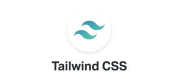
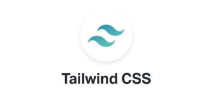
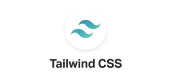

Seleção de frameworks
 

A seleção de frameworks que seja vigente ou de destaque no mercado, com vistas às melhorias e inovações de produtos

A seleção de frameworks que seja vigente ou de destaque no mercado, com vistas às melhorias e inovações de produtos
Consiste na possibilidade de que um site possa ser bem utilizado em dispositivos de diferentes tamanhos
A responsividade, considerando os diversos dispositivos utilizados para acesso à aplicação. Pode-se fazer uso de servidor web que permita a hospedagem e o acesso da aplicação a partir dos equipamentos dos alunos
A acessibilidade, por meio do emprego da semântica apropriada à linguagem de marcação
Possibilita que pessoas com diferentes tipos de dificuldades possam ter acesso efazer bom uso do seu site
A utilização de repositórios para controle de versão, que fundamentará as atividades das demais unidades curriculares do módulo específico
A ênfase em UX para implementação de boas práticas como, por exemplo, utilização de ferramentas gráficas para criação e tratamento de imagens
A hospedagem em infraestrutura web que permita vivenciar a prática de mercado
A utilização de frameworks, orientação a objeto, padrão MVC, e manipulação de dados XML, JSON, que permitam desenvolver aplicações com persistência de dados
A realização de atividades integradoras com o fornecimento de webservices, entre as unidades curriculares
A modelagem do banco de dados a partir de modelos conceitual, lógico e de dicionário de dados
A utilização de SGBD de mercado é o conjunto de programas de computador responsáveis pelo gerenciamento de uma base de dados
A integração com a linguagem de programação utilizada nas demais unidades curriculares do curso
O ambiente de desenvolvimento, para que leve em consideração a linguagem de programação definida desde o módulo básico
Os aplicativos a serem desenvolvidos para o emprego de recursos avançados de hardware disponíveis nos dispositivos móveis como, por exemplo, câmera, leitor biométrico e GPS